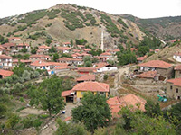
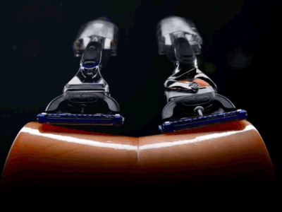

Hello World!
Asil Mesele
Tum bu olanlar yilinda not defterinde table ile her bir sutunu sari kirmizi yaparak Gheorghe Hagi' nin hangi yil hangi takimda oynayip kac gol attigini yazmamla basladi.Bir tanede profil resmi ekledim kime istersen uyarla sanirsin dinamizmi ben buldum.
hatirladigim tam olarak atom da html yazip enter a bastigimda karsima cikan yapi ve marquee etiketidir.
Yukaridaki bahsettigim yapi
<!DOCTYPE html> // Bu kisim haric
<html>
<head>
<meta charset="utf-8">
<title>
Baris Karaderili
</title>
</head>
<body>
</body>
</html>
yilinda hayalim olan meslegi yapmak icin mevcut olan isimi biraktim ve hergun bir deli dana gibi ne bulursam calistim. (C, C++, C#, php, phyton, javascript, html, css, illustrator, photoshop, indesign).
Yurumeden kosmaya calisiyorsun!
Sonuc: Akil danisacak birini bulduktan sonra tek bir bransa yonelmem gerektigini anladim ve html, css, javascript ogrenmeye karar verdim. Ilk firsatda w3schools ilk ogretim okuluna kaydimi yaptirdim.Sonra baska okullar baska okullar anladimki bu okullar bitmeyecek.Tam da istedigim sey buydu aslinda bitmeyen bir okul.
Sevdiklerim
-
Firefox
-
W3schools
-
Uikit(okundugu gibi)
-
Atom
-
Patlicanli her tur yemek
-
Corum/Sungurlu/Karaoglu Koyu
 -
Corumspor
-
Colombia(columbia degil)
-
Trt-1 pazar sabah 10:00
-
SoundCloud
-
Charlie Chaplin
-
惡の華
-
四月は君の嘘
Sevmediklerim
- Firefox disindaki tarayicilar
- Taze fasulye yemegi
- Pop muzik
- Kulaklik olmadan calismak
- Wordpress
- Makarna(duduk makarnadan bahsetmiyorum)
Vakit gecirdigim yerler
TSK - Deniz AstsubayiStores Dis Ticaret - Arayuz KodlamaMediaclick Web Tasarim Ajansi - Arayuz KodlamaTaximpro Creative Media - Arayuz KodlamaProj-e Yazilim - Arayuz Kodlama(devam)- Clockwork Dijital Ajans
Bilgi ve Fikir Sahibi Olduklarim
HTML, HTML2, HTML3.2, HTML4.01, HTML5, CSS, CSS2, CSS3(Dunyayi kurtaran adamin oglu!)
HTML, CSS, XHTML, jQuery, Sass, Jade(Pugjs), Bower, Gruntjs, Git, Bootstrap, UIkit
Yetkinliklerim(Yuzde yuzleri cakayimda alem front end gorsun!)
- HTML 100%
- CSS 100%
- Javascript 100%
- XHTML 100%
- W3 Standart 100%
- Semantic 100%
- Dinamizm 100%
Permatikler bile flex teknolojisi kullaniyor(Dedemin yuzune pek uyumlu oldugunu sanmiyorum.)
Kullan artik bu onu!
Huzur
"Hayatta her zaman f5 atip tasarimin aynisini gordugundeki huzura sahip olamazsin."
- Kendim